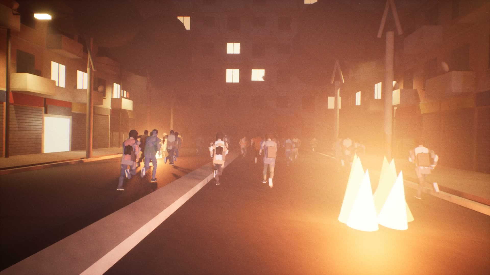
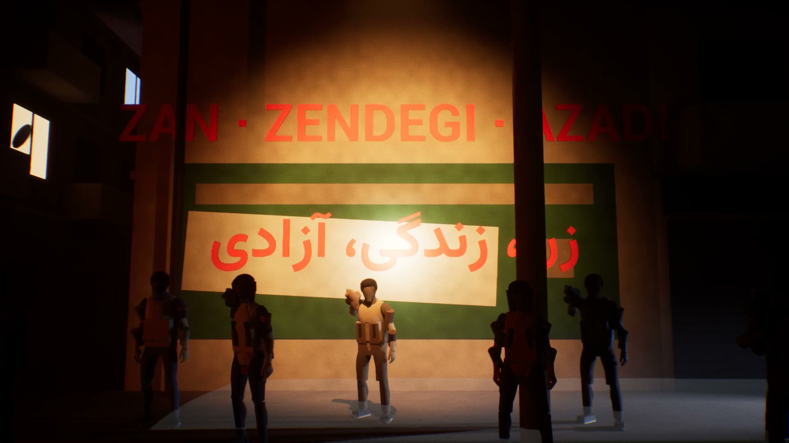
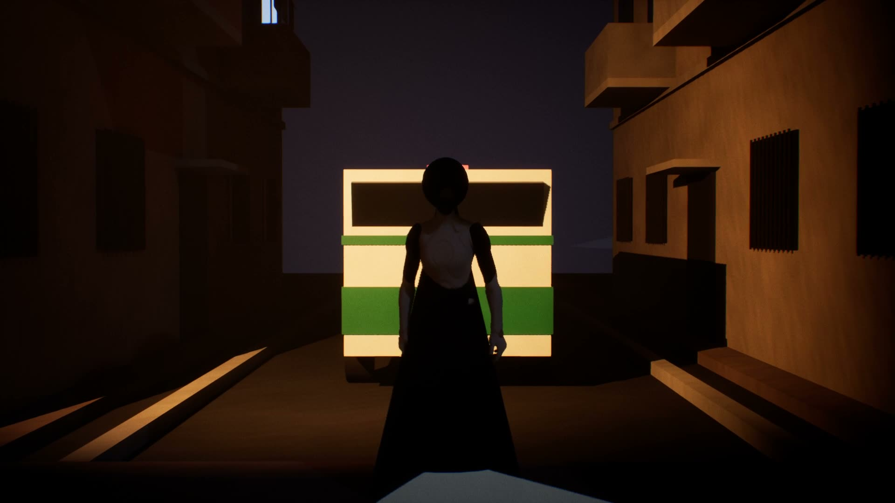
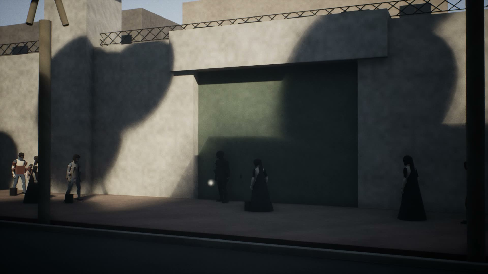
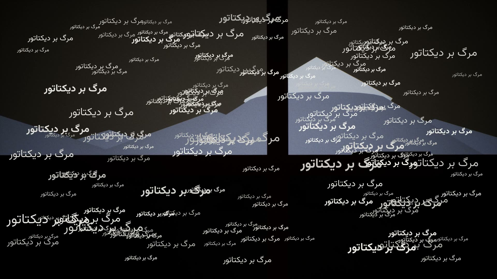
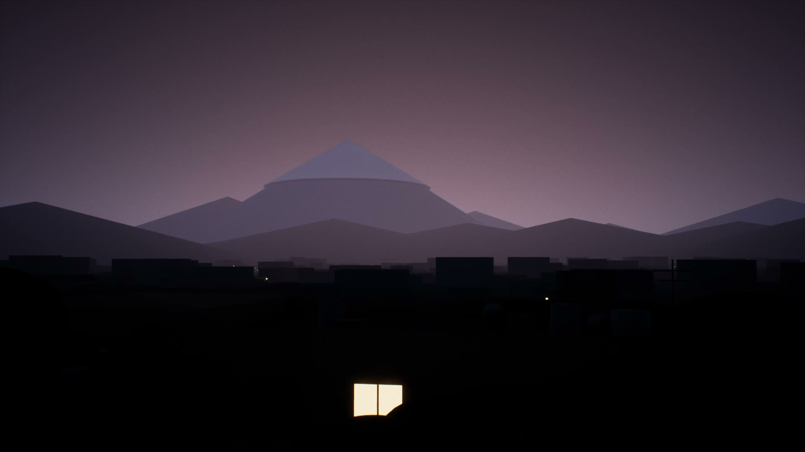
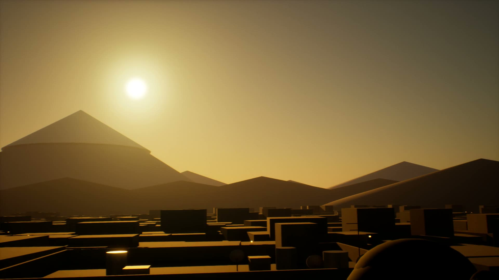

فصل اول · شهریورChapter One · Shahrivar
ون سبزThe Green Van
یک خواهر، دری در خیابان وزرا، خانوادهای که منتظر میماند.A sister, a gate on Vozara Street, a family that waits.

CHESHM HAYASH
بازیای دربارهی آنچه چشمهایش دید. A game about what his eyes saw.

تریلر بهزودی اینجا قرار میگیرد.The trailer will be here soon.
REC ● 00:55


در این بازی هیچ صدایی نیست.
کسانی که این داستان را زندگی کردند، نمیتوانند آزادانه حرف بزنند.
حرفهایشان اینجا نوشته شده است.There are no voices in this game.
The people who lived this story cannot speak freely.
Their words are written here instead.
در تمامیِ محاکمههایی که مو حاکم بودIn every trial where hair was the judge,
صورتهای دلربا، گیسهاشان کنده شدlovely faces had their braids torn away.
قبرهای سرد و گلی برای سروهای تنومندCold, muddy graves for tall, strong cypresses,
بعد از شنیدن صدای بیگانههای کروکودیلصفتafter the voices of crocodile-hearted strangers
که همهجا را تاریک کردند و یک گلوله چشم چپش را شکافتwho darkened everything, and a bullet split his left eye,
و پوکهاش رفت توی باارزشترین دارایی موزههاand its casing became the most treasured piece in the museums.
فصل اول · شهریورChapter One · Shahrivar
یک خواهر، دری در خیابان وزرا، خانوادهای که منتظر میماند.A sister, a gate on Vozara Street, a family that waits.
فصل دوم · مهرChapter Two · Mehr
شبهایی که شهر پر از صدا شد. او از هر چه میبیند فیلم میگیرد.The nights the city filled with voices. He films everything he sees.

فصل سوم · پس از آنChapter Three · After
آنچه یک خانواده نگه میدارد.What a family keeps.

نگاه کن… داره میاد بالا
Look… it's coming up.
بالای بامهای تهران، رو به دماوند.Over the rooftops of Tehran, facing Damavand.
فقط با C++. هر خیابان، بام، نور و مه در لحظه با کد ساخته میشود.C++ only. Every street, rooftop, light and wisp of fog is built by code at runtime.
کد با کمکِ عاملهای هوش مصنوعی (Claude Code) و زیرِ نظرِ یک توسعهدهنده نوشته شد.The code was written with AI agents (Claude Code), directed by one developer.
موسیقی و صدا با fal ساخته شد. هیچ صدای ضبطشدهای در کار نیست.Music and sound were generated with fal. No recorded voices, anywhere.
فارسی، انگلیسی، آلمانی. متنِ راستبهچپ، در خودِ موتور.فارسی, English, Deutsch, with right-to-left text shaped inside the engine.
به یاد حسام
In loving memory of Hesam